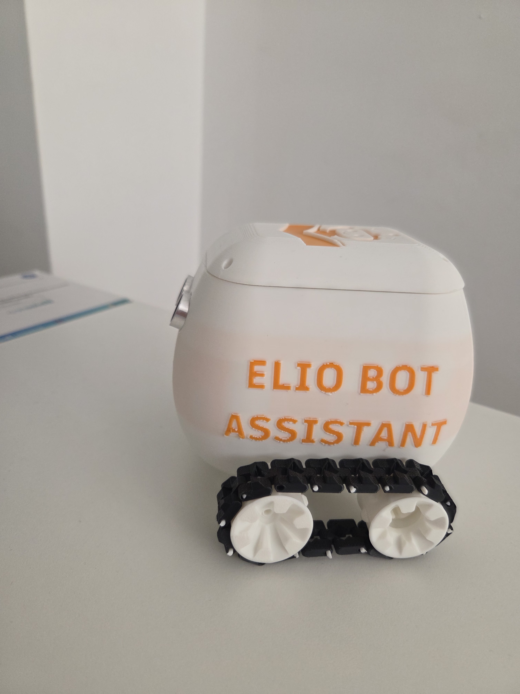
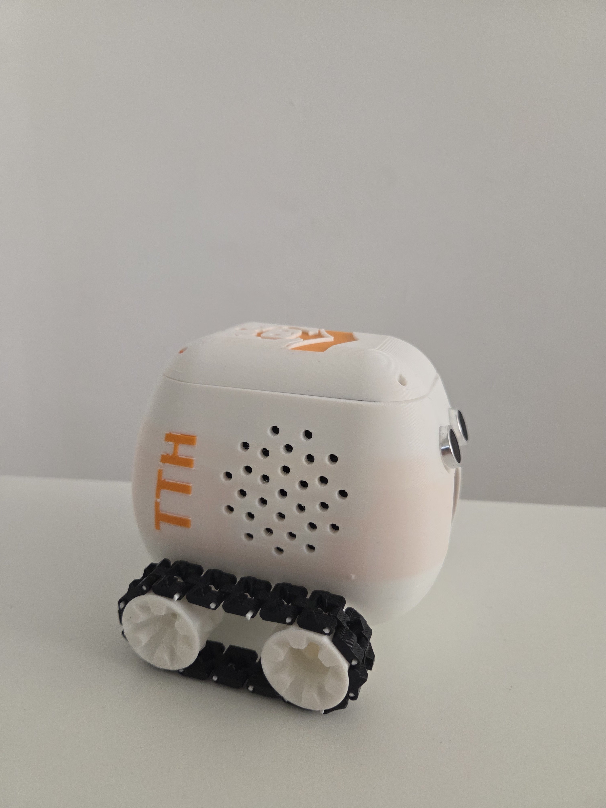
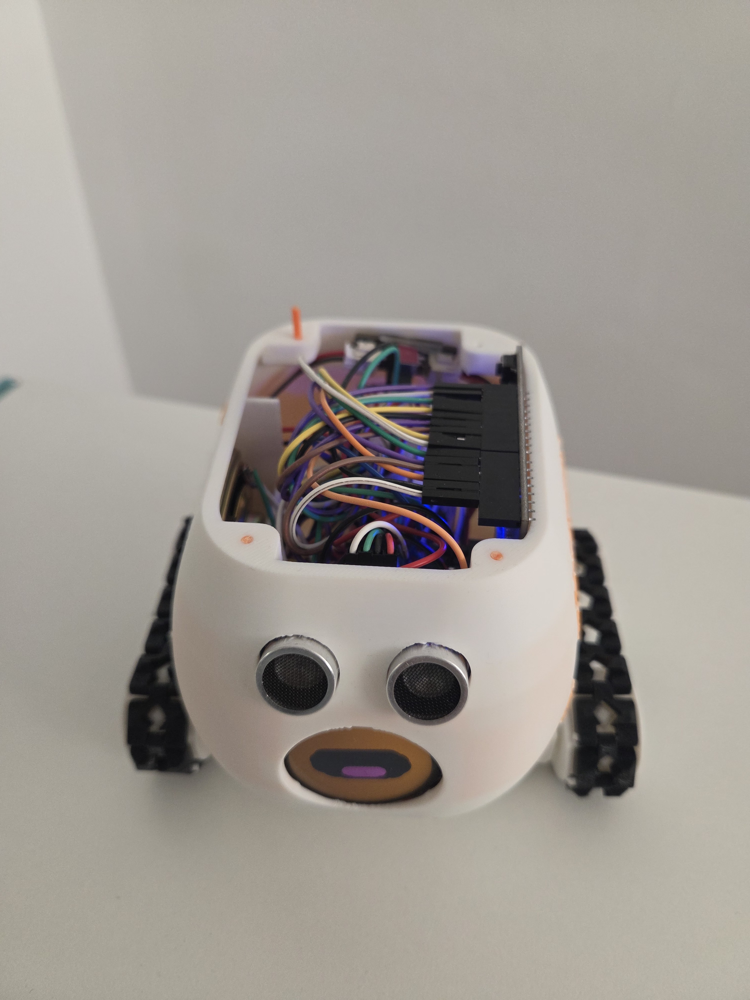
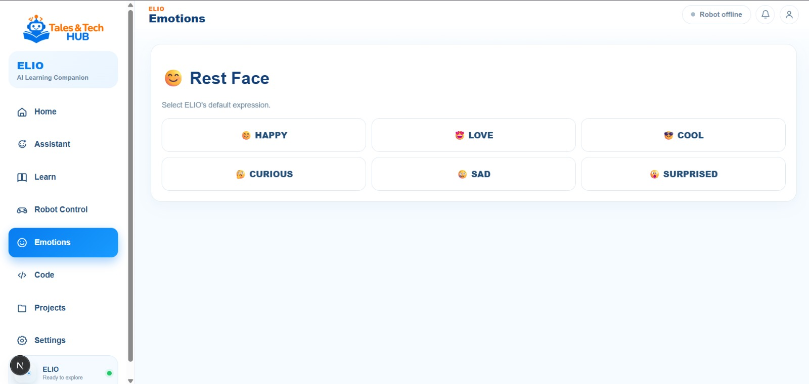
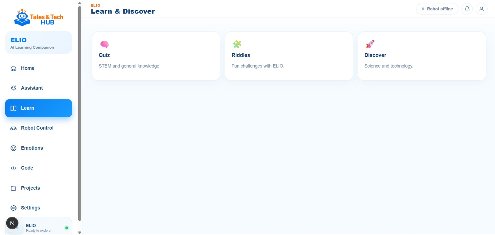
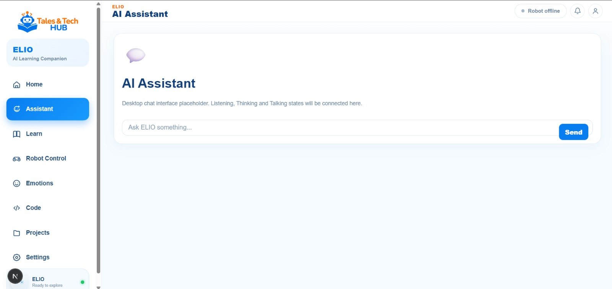

Physical
A custom 3D-printed robot body built around real electronics, drive components, sensing and an interactive front display.
An educational robot designed as one connected product — physical hardware, embedded control, Bluetooth communication, interactive software and an AI-assisted learning experience.


A custom 3D-printed robot body built around real electronics, drive components, sensing and an interactive front display.
Bluetooth communication links the robot to its software interface for movement, interaction and control.
Visual programming, guided learning and playful interaction turn the hardware into a platform rather than a single-purpose toy.
The software direction includes AI-assisted conversation and responsive behaviors that make the experience feel more personal.
ELIO was not designed around an off-the-shelf enclosure. The body, internal layout and interaction points were developed around the electronics and the experience the robot needed to support.




REAL HARDWARE · REAL INTEGRATIONThe robot is built around an ESP32-based control system with motor driving, ultrasonic obstacle sensing, a round display and Bluetooth communication. The mechanical design had to accommodate those components while keeping the robot compact and serviceable.
The desktop application is currently in active development. It is being built as the software layer around ELIO, bringing robot control, learning, programming and AI interaction into one place.
The control interface connects to the physical robot over BLE and provides direct movement controls alongside robot status.

A block-based programming environment is designed to let users build robot behaviors visually, connecting coding concepts directly to movement and physical feedback.

ELIO is designed to feel expressive rather than purely mechanical. Emotions, learning activities and the AI assistant give the software a personality layer while keeping education at the center.
Software-controlled emotional states are part of the interaction model, giving ELIO more character during use.

Learning modules are designed around exploration, quizzes and technology-focused activities.

The AI assistant is being integrated as another way to interact with ELIO and support a more natural learning experience.

Built and functional, including movement, BLE control and obstacle-aware behavior.
In active development. The current interface already defines the main product areas and interaction model.
Planned as the next companion interface, with the same core robot control and learning experience adapted for mobile use.
3D-printed enclosure, drive system, electronics, display and sensing integrated into one compact body.
Firmware handles motion, safety behavior, peripheral control and the robot-side communication layer.
BLE connects the physical robot to the software interface without turning the application into a purely simulated experience.
The application brings robot control, visual programming, educational content and AI-assisted interaction together.
ELIO · ROBOTICS + SOFTWARE + AI